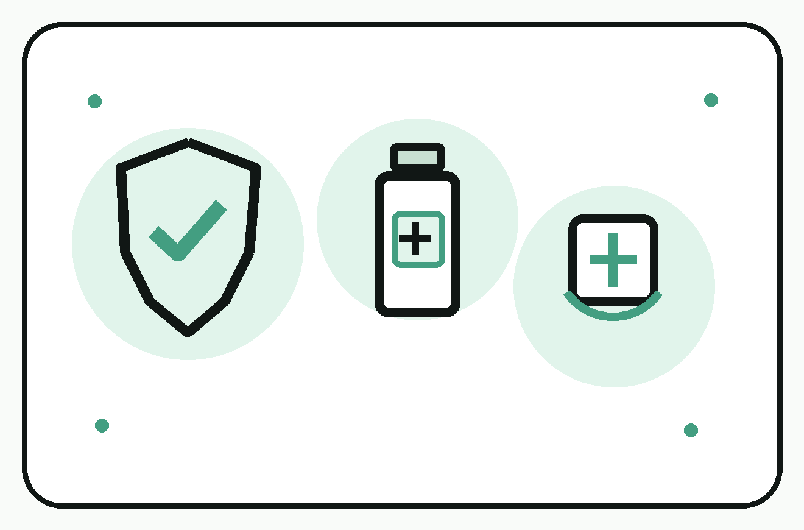

Описание основных мер по профилактике инфекционных вирусных заболеваний: СПИД и гепатит
Разные вирусные инфекции могут передаваться сходными путями, но способы их профилактики не во всём одинаковы. В работе предстоит сравнить три инфекции, установить общие меры защиты и объяснить их значение.

Исходные данные
ВИЧ-инфекция вызывается вирусом иммунодефицита человека. СПИД — синдром приобретённого иммунодефицита, который может развиться на поздней стадии ВИЧ-инфекции без эффективного лечения. Вирусные гепатиты B и C вызывают разные вирусы, преимущественно поражающие печень.
Для сравнения используйте сведения о возбудителях и путях передачи инфекций.
| Заболевание | Возбудитель | Возможные пути передачи |
|---|---|---|
| ВИЧ-инфекция | ВИЧ | Половой путь; контакт с инфицированной кровью, в том числе через общие иглы; передача от матери ребёнку во время беременности, родов или грудного вскармливания. |
| Вирусный гепатит B | Вирус гепатита B (HBV) | Контакт с инфицированной кровью и некоторыми другими биологическими жидкостями; половой путь; передача от матери ребёнку, особенно при родах. |
| Вирусный гепатит C | Вирус гепатита C (HCV) | Преимущественно контакт с инфицированной кровью; реже возможны передача половым путём и от матери ребёнку. |
ВИЧ, вирусы гепатита B и C не передаются при обычном общении, рукопожатиях и совместной учёбе. Профилактика должна опираться на реальные пути передачи, а не на страх перед людьми с инфекцией.
Ход работы
Определение возбудителей
По исходной таблице определите возбудителя каждой инфекции. Запишите, чем отличаются понятия «ВИЧ-инфекция» и «СПИД».
Сравнение путей передачи
Установите, какие пути передачи являются общими для рассмотренных инфекций и какой путь преобладает при гепатите C.
Общие меры профилактики
Выберите из предложенных мер те, которые помогают предупреждать сразу несколько инфекций. Объясните выбор.
- Использование стерильных одноразовых игл и инструментов.
- Исключение совместного использования предметов, на которых может оставаться кровь.
- Барьерные средства защиты при половых контактах.
- Профилактические осмотры и тестирование по медицинским показаниям.
- Обычное мытьё рук перед едой.
Последний пункт полезен для общей гигиены, но не является основной специфической мерой предупреждения этих трёх инфекций.
Специфическая профилактика
Определите, для какой из рассматриваемых инфекций существует вакцина. Объясните, почему профилактика гепатита C требует других мер.
Безопасность предметов личного пользования
Объясните, почему нельзя пользоваться чужими иглами, бритвами и другими предметами, которые могут быть загрязнены кровью. Почему инструменты, нарушающие целостность кожи, должны быть стерильными?
Сравнительная таблица профилактики
Заполните таблицу в тетради. Для каждой инфекции укажите возбудителя и две–три наиболее значимые меры профилактики.
| Заболевание | Причина / возбудитель | Основные меры профилактики |
|---|---|---|
| ВИЧ-инфекция | ||
| Гепатит B | ||
| Гепатит C |
Сравнение и объяснение
Почему для предупреждения инфекций с несколькими путями передачи требуется сочетать разные профилактические меры? Приведите два примера.
Вопросы для анализа
- Какие меры профилактики являются общими для ВИЧ-инфекции и вирусных гепатитов B и C?
- Почему вакцинация против гепатита B не заменяет правила обращения с инструментами и предметами личной гигиены?
- Почему профилактические меры должны учитывать именно путь передачи инфекции?
- Почему нельзя считать обычное бытовое общение путём передачи этих инфекций?
Вывод
Сформулируйте вывод: почему для профилактики вирусных инфекций необходимо учитывать особенности возбудителя и пути его передачи, а также сочетать общие и специфические меры защиты?